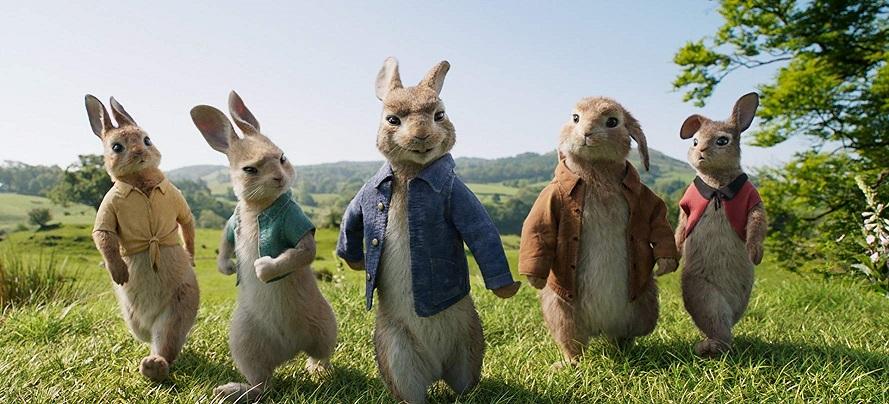

Normally I might write a post about the year that passed and what’s coming for 2019, but considering the lack of content that I’ve been able to write about this year, I should probably pick a larger timeframe.
In October of 2014 I joined a little animation company here in Sydney named Animal Logic. Earlier that year they released a film that caught the world by surprise: The Lego Movie.
But how did I get there?
I’ve always loved those little featurettes that lift the cover on the creation of a movie or game. Getting to see how something was made (even if it was a carefully choreographed marketing piece) inspired me to pursue game development - to join those teams and make something awesome.

In 2014 I was working on converting mobile games to the Windows platform for a number of high profile clients. But conversion work is a little thankless (it tends to be uncredited) and creativity isn’t really the focus there.
On a whim one night I decided to try for Animal Logic. A week later and I’m in an interview here in the Sydney studio. Not too long after that I’m walking through the doors again, this time as a new employee of the Research and Development group.
I was working in film which was new to me, but I could finally contribute to the creation of an animated feature film using the knowledge gained working on software and games.
Over the last four years I’ve had the chance to work with an amazing team and produce three Lego movies (Batman, Ninjago and The Second Part) as well as a live-action hybrid version of a tale I read as a child: Peter Rabbit.
Mix in many smaller VFX projects for films such as Avengers 2 or Captain America: Civil War (I’m technically in one scene, hidden in the darkness!) and I’ve had the pleasure of being involved in the creation of some great technology that has allowed some great films to be created.
With the amazing experiences and new knowledge I’ve gained at Animal Logic, it is time to part ways and explore something new.
In 2019 I will be joining Frontier Developments in Cambridge UK as a Principal Animation Programmer. I’ll be working with their current engine and animation teams to figure out what’s next for animation on upcoming titles.
I’m looking forward to the move and new challenges that await. While I am sad to depart Animal Logic, I know they have some great tech behind them and are set for success in the coming years. I’ll be watching and enjoying their work when it appears in cinemas instead of as an early animatic.